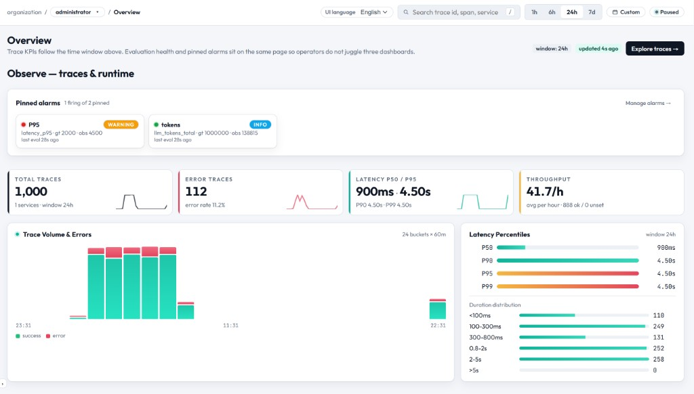

EasyObs Documentation
A lightweight observability platform for LLM agents. OTLP/HTTP-based tracing, multi-tenant RBAC, and a 3-Way evaluation system.

What is EasyObs?
EasyObs is an open-source observability platform purpose-built for LLM (Large Language Model) agent services. Based on the OpenTelemetry Protocol (OTLP/HTTP), it collects traces and provides monitoring, analysis, and evaluation through an intuitive web console.
Key Features
🔍 Tracing
Track every LLM call, retrieval, and tool use as spans. Monitor latency, cost, and token usage in real time.
📊 Interactions
Group multi-turn conversations into sessions and track per-user engagement. Unified view with Sessions and Users tabs.
⚡ Quality Evaluation
3-Way evaluation with Rule-based, LLM-as-a-Judge, and Human labeling. Multi-Judge consensus and cost governance.
🔗 SDK & Integration
Python SDK, TypeScript/JS, LangChain callback handler, and all OTLP-compatible languages supported.
🏢 Multi-Tenant
Organization × Service 2-axis multi-tenancy. SA/PO/DV role-based access control.
🚨 Alarms
Threshold-based alerting. Automatic monitoring and notification for error rate, latency, and cost metrics.
Architecture Overview
| Component | Tech Stack | Role |
|---|---|---|
| API Server | Python 3.11+ / FastAPI / Uvicorn | OTLP collection, REST API, auth |
| Web Console | Next.js 14 / React / TypeScript | Real-time dashboard, configuration UI |
| Catalog DB | SQLite (dev) / PostgreSQL (prod) | Metadata, users, organizations |
| Blob Store | Local FS / S3 / Azure / GCS | Raw trace data storage |
| Agent SDK | Python (easyobs_agent) ~15KB | Sends traces from services |
Get Started Quickly
git clone <repository-url>
cd easyobs_ai_observability
cp .env.sample .env./scripts/run-dev.ps1 # Windows
./scripts/run-dev.sh # Linux/macOSOpen http://localhost:3000, sign up, and start exploring.